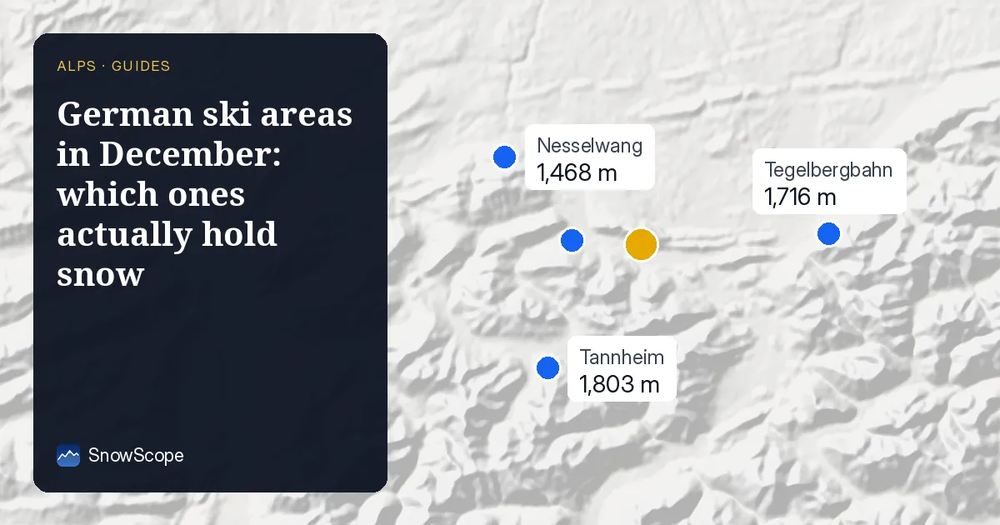

German ski areas in December: which ones actually hold snow
Key figure first: of the seven German ski areas we compared, only the Zugspitze glacier and the upper Fellhorn had 30 cm or more in the week of 15-21 December in at least 9 winters out of 10 in our 46 winters of snow history. The cheaper day tickets of the Bavarian pre-Alps come with much lower odds.
See the live snow forecast for German ski areas in December in the SnowScope appSnow depth, powder alerts and the 3D map, free.
The ranking by December snow
We looked at the share of winters with 30 cm or more in the week of 15-21 December, at mid-mountain and at the top. The Zugspitze (1) leads: 100 % at the 2627 m top and 89 % at mid-mountain. The Fellhorn/Kanzelwand above Oberstdorf (2) follows with 93 % at its 1965 m top but 59 % at mid-mountain. The Garmisch-Classic (3) has 89 % at its top and 48 % in the middle.
Then the drop: Sudelfeld (4) 59 % at the top and 39 % in the middle, Brauneck (5) 57 % and 28 %, Oberjoch (6) 59 % and 28 %. The Feldberg in the Black Forest (7) is last, with 24 % at the top and 17 % in the middle.

What the day costs
On the official 2026-27 lists, the Zugspitze day ticket costs EUR 70.50 online, the Garmisch-Classic EUR 69 online and the Fellhorn/Kanzelwand EUR 72.90. Sudelfeld, Brauneck and Oberjoch each charge EUR 55. The Feldberg sells its day tickets with fully dynamic prices, so we quote none.
For longer stays, the Oberstdorf lifts sell 6 days for EUR 344.50 in Advent (until 20 December) and Oberjoch for EUR 278. Sudelfeld and Brauneck share a multi-day pass at EUR 208 that gives 4 ski days within 6. The Zugspitze and the Garmisch-Classic do not sell a 6-day pass.
The honest losers
The low areas are not bad ski areas; they are bad December bets. Brauneck's base (715 m) has 9 cm on a typical 15 December, Sudelfeld's (865 m) 15 cm, and in recent Christmas weeks neither base reached 30 cm in a single winter. The Feldberg's top at 1446 m has 8 cm on a typical 15 December.
With a day ticket at EUR 55 and an hour's drive from Munich, these hills are worth it only on days when a storm has just passed. Check the snow map and their own reports before you leave.
Snow per euro
Per euro, the Zugspitze is the clear December winner: almost the same price as the others for snow that is there every year. The Fellhorn/Kanzelwand is the best week, thanks to the Advent price and a pass valid in Oberstdorf and the Kleinwalsertal. For a cheap day, wait for snow and pick Sudelfeld or Oberjoch.
Tips for skiers
- One day in December: book the Zugspitze online; the plateau had 30 cm in every one of our winters by mid-December.
- A week in December: Oberstdorf with the Advent 6-day pass, skiing the upper Fellhorn and Kanzelwand.
- Low Bavarian hills and the Black Forest: go only after fresh snow, and decide the day before.
- Read the Bavarian avalanche report before leaving the piste, especially on the Zugspitze plateau.
References and credits
- Zugspitze: official lift-pass prices (2026-27), checked 13 November 2026 zugspitze.de/prices
- Fellhorn/Kanzelwand: official lift-pass prices (2026-27), checked 13 November 2026 www.ok-bergbahnen.com/en/preisinformationen/preise-tagesskipass-oberstdorf-kleinwalsertal.html
- Garmisch-Classic: official lift-pass prices (2026-27), checked 13 November 2026 zugspitze.de/prices
- Sudelfeld: official lift-pass prices (2026-27), checked 13 November 2026 www.sudelfeld.de/tagesskipaesse/
- Brauneck: official lift-pass prices (2026-27), checked 13 November 2026 www.brauneck-bergbahn.de/en/day-and-hour-ski-passes.html
- Oberjoch: official lift-pass prices (2026-27), checked 13 November 2026 www.bergbahnen-hindelang-oberjoch.de/preise/
- Feldberg: official lift-pass prices (2026-27), checked 13 November 2026 www.feldberg-erlebnis.de/winter/tickets-preise
About these numbers
Snow numbers: SnowScope snow history, 46 past winters (1980-81 to 2025-26) at the resort's heights, corrected for height (an estimate for an area, not resort reports); 'good snow' = 30 cm or more on the ground as the week's average. Map: our typical depth on 15 December spread over the terrain by height. Runs and lifts: OpenSkiMap mapping. Lift-pass prices: the resorts' official price lists, checked on 13 November 2026; prices can change.
Cite this report
For research, teaching or the press: the numbers and charts are free to reuse under CC BY 4.0 with this citation.
SnowScope (2026), German ski areas in December: which ones actually hold snow, https://snowscope.app/blog/en/2026/11/germany-ski-areas-december-which-hold-snow.html, accessed 2026-11-14
SnowScope (Atlas Labs). (2026, November 14). German ski areas in December: which ones actually hold snow. SnowScope snow reports. https://snowscope.app/blog/en/2026/11/germany-ski-areas-december-which-hold-snow.html
BibTeX
@misc{snowscope2026germanyskiareasdecemberw,
author = {{SnowScope (Atlas Labs)}},
title = {German ski areas in December: which ones actually hold snow},
year = {2026},
month = nov,
howpublished = {\url{https://snowscope.app/blog/en/2026/11/germany-ski-areas-december-which-hold-snow.html}},
note = {Published 2026-11-14 14:24 UTC; accessed 2026-11-14}
}· CC BY 4.0 · Methods, data and tools →
Follow German ski areas in December
Free: a message when fresh snow is coming, and the forecast every morning.
More snow reports

St Anton and Ski Arlberg through the winter: how deep the snow usually is each month at three heights, from 46 past winters.

A year of snow in Sölden, phase by phase: when the glaciers whiten, the World Cup weekend, the long middle of winter and the spring weeks, from 46 past winters at three heights.

The Sillian (Hochpustertal) ski map with our snow layer on 13 November 2026: 8.6 cm on the top at 2399 m, bare lower slopes, and a week of mixed rain and snow with the snow line near 1,800 to 2,000 m.